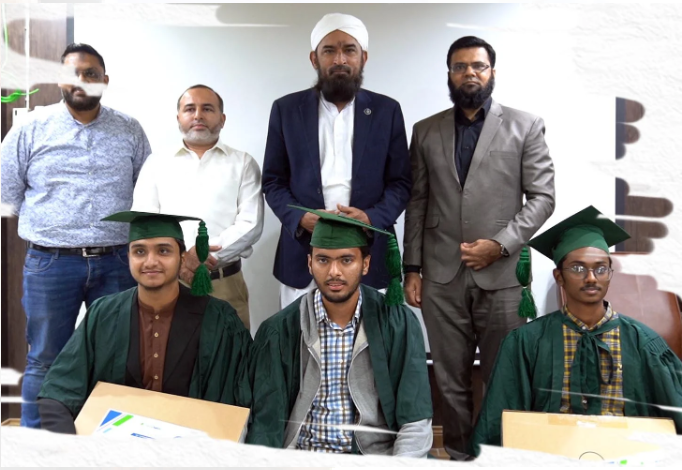

Today is the age of information technology and we aim to equip our youth with computer programming skills and
prepare them for the development of the country. In this regard, our Saylani Mass IT Training Program is
providing vocational training to more than 75,000 students in Web and Mobile Application Development, CCNA,
Graphics Designing, Computer-Based Accounting in Karachi, Hyderabad, Faisalabad, and Islamabad. Our goal is to
develop more than 1 million software developers across the country, which will add about $100 billion annually
to Pakistan's economy.
By empowering our youth with in-demand digital skills, we are not only creating employment opportunities but
also fostering innovation and entrepreneurship. The program is designed to bridge the gap between education and
industry needs, ensuring that our students are job-ready upon completion. We believe that a skilled IT workforce
is the backbone of a strong digital economy, and through this initiative, we are contributing to the global tech
ecosystem while uplifting the local communities.
Our curriculum is constantly updated to align with the latest technological trends and international standards.
Instructors are industry professionals who bring real-world knowledge into the classroom, enabling students to
gain both theoretical and practical experience. We also provide career counseling, mentorship, and placement
support to help students find opportunities both locally and internationally.
Furthermore, special attention is given to underprivileged and marginalized groups to ensure inclusive growth
and equal access to opportunity. Through our efforts, we envision a digitally empowered Pakistan where every
talented individual has the tools and platform to succeed.
A 13-year-old boy from Karachi named Kashan Adnan has achieved incredible success at a very young age. He is now
earning around Rs 500,000 every month after completing a course in Artificial Intelligence (AI) and
Chatbot Development at Saylani Welfare. Kashan didn’t stop there. He also finished a course in web and mobile
app development, learning important skills that helped him start his own business. His startup, called “Aghaz
Tech,” offers technology services to international clients. Through his company, Kashan is using his knowledge
to help businesses by developing advanced tech solutions.
Not only is he a successful entrepreneur, but he is also passionate about teaching others. He is currently
sharing his skills and expertise with more than 100 students. By teaching them what he has learned, he is
inspiring other young people to explore technology and build their own futures.
Kashan’s story is a powerful example of how young minds can achieve great things with the right education
and determination. His journey shows that age is no barrier to success, especially in the world of technology and
entrepreneurship. His achievements highlight the importance of education and training programs like those
offered by Saylani Welfare. These programs are helping young people gain valuable skills that can lead to real
opportunities. Kashan’s success not only brings pride to his family and community but also motivates other young
people to pursue their dreams and make a difference in the world.